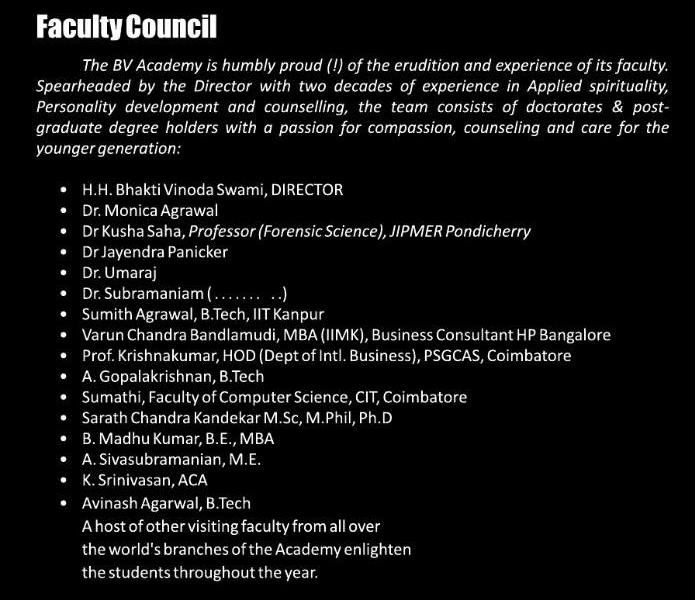
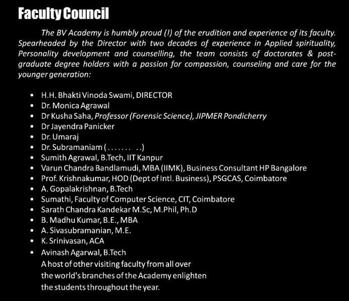

"Parivartan" - the ISKCON youth project at NIT- Calicut has an interesting background. Back in late 90s and early 2000, HG Sarvaisvarya Dasa (now HH Bhakti Vinoda Swami) would regularly come to NIT (then REC, Calicut) and had introduced Krishna Consciousness to the students of college. Many students became dedicated followers of ISKCON and even got initiated.
The students inspired thus, encouraged their juniors as well and hence a band of students became quite popularly known as "Hare Krishna" were created at the college. Under constant guidance from HG Sarvaisvarya Dasa (now HH Bhakti Vinoda Swami) the preaching at the college flourished.
The students inspired thus, encouraged their juniors as well and hence a band of students became quite popularly known as "Hare Krishna" were created at the college. Under constant guidance from HG Sarvaisvarya Dasa (now HH Bhakti Vinoda Swami) the preaching at the college flourished.
 
